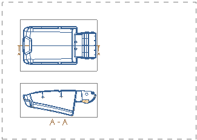
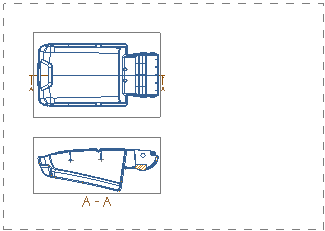

打开部件并查看图纸页信息
-
打开 drf5_borders_and_zones_dwg。

图纸页“Sheet 1” 工作 -
在部件导航器
 中，双击图纸页“Sheet1”。
中，双击图纸页“Sheet1”。 -
在图纸页对话框的大小组中，注意到图纸是设置为定制大小600 x 900。
-
点击取消。
打开 drf5_borders_and_zones_dwg。

图纸页“Sheet 1” 工作
在部件导航器  中，双击图纸页“Sheet1”。
中，双击图纸页“Sheet1”。
在图纸页对话框的大小组中，注意到图纸是设置为定制大小600 x 900。
点击取消。